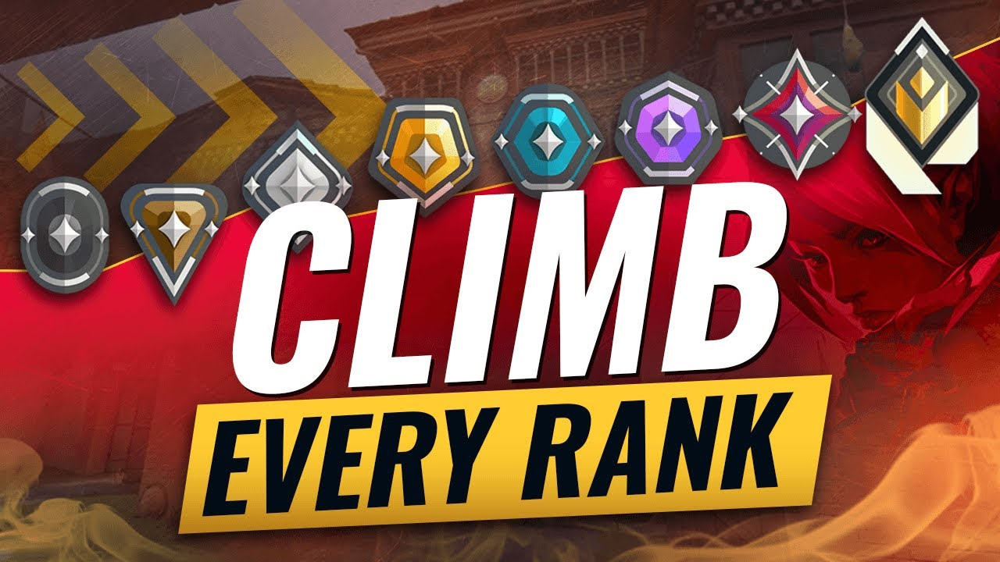

Personal Ranking

I've been playing Valorant ever since its beta release, and its official release. Over the past 4+ years of playing this game almost every other day, every month and it being one of my most favorite games of all time, I'm proud to say I'm a consistent top ranked player in the country. I've had my time at the bottom and at the top, with my most recent achievement in December being me hitting top 500 in North America leaderboards for a second time. Out of millions of players I'm consistently in the top 0.01%, top 8,000 - top 500 within North America. Being a consistent Immortal/Radiant player, I get the opportunity to compete in local LAN tournaments as well as online organized tournaments for cash prizes. I've been with several Tier 3 professional organizations throughout my 4 year career and I don't plan on slowing down any time soon as I'm currently ranked top 5,000 in the North America region.
Personal Experience

My personal experience in ranked, and the game in general, is something I will remember for the rest of my life. I have spent countless days on this game, meeting so many friends that I would come to know and love, some friends I'd eventually meet in-person, and it's been a blessing to play with all walks of life. The amount of good and bad memories I have on this game have shaped me, especially since I was on this game 24/7 during quarantine. It gave me some of the most genuine relationships I've had, as well as the opportunity to earn money for myself, and prove my skills within North America. To this day I am constantly meeting people that brighten my day, and it still is one of my all-time favorite games to play.
Skills Developed
There are so many skills I could talk about. However, for the sake of keeping this section simple and short, I will list the most imporant in my own opinion. Firstly, I've developed my English and speaking skills, being an immigrant from the Philippines I pride myself in speaking fluent English and Tagalog. The amount of practice I get from playing games, especially Valorant, is definitely over 5000+ hours worth of talking to others. Second, I've developed my team work skills to the point where I can work well within any group, adapt to my surroundings and resources, and be able to just be myself around others and provide support with my words. Lastly, my reaction time has definitely been affected by the consistent playing of Valorant. Being a strategic, tactical shooter, it requires fast reaction times and quick decision making. Being able to consistently practice this for 4+ years has developed my reaction time and quick thinking to be above the average person, and this has its own real-life implications, giving me the upper hand in sports such as basketball which also require strategic, yet quick thinking.